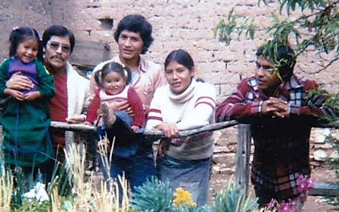

Una amiga, mujer, madre, dedicada al prójimo. Prefería “dejar de comer por dar a sus hermanos”. Estas son las características de Nora en opinión de su esposo.
Nunca pensé que llegaría el momento. Tomé la ropa que pude me despedí de mi esposa e hijos y en rumbé a Lima, solo sabía que ella se había puesto muy mal, había sufrido una trombosis cerebral y la habían operado por lo tanto necesitaban unidades de sangre para “devolver” a la Clínica Ricardo Palma.
Una vez en la clínica me hicieron las pruebas y resulte apto, pero la asistenta me recomendó tomar alimentos antes. Mientras esperaba, trate de enterarme de los pormenores de lo ocurrido y Kely me contó que ella estaba de visita en su casa. Dos días antes mientras almorzaba se había quedado dormida profundamente, pensaron que estaba cansada y la dejaron. Paso mucho tiempo y no se “despertaba”, trataron de despertarla para que descansara en su cama, pero no reaccionaba, inmediatamente la trasladaron de emergencia a la clínica y la operaron.
Almorzamos, hice la donación, luego pude verla. Me impresionó mucho verla en ese estado, estaba en una cama con un drenaje conectada a la cabeza. Lo que sorprendió era su tranquilidad y lucidez al conversar. Conversamos de los chicos, le pregunté cómo se sentía, a que le temía, que más extrañaba y si recordaba cuando me “cargaba” de niño mientras mamá estaba en las “faenas” comunales. También le pregunté si se acordaba cuando de niño me llevó a sus clases de corte y confección en Lima, recuerdo que me sentó junto a ella y me dio tres besos de moza, apenas comí uno porque me mareaba la cabeza por tanto dulce. Sus amigas le decían que bonito niño tan tranquilito. También recordamos cuando pasaba mis vacaciones del colegio con ellos en San Jerónimo de Tunan – Huancayo y las alturas de la Mina de San Cristóbal, mientras “pastoreaban” por esos lugares.
Lo que si me llamó la atención fue que tenía algunos moretones en los brazos, pensé, quizás se pudo haber golpeado en algún momento. Otra cosa era que no dejaba de repetir “la duda sigue creciendo”. Traté de que me explicara, pero solo repetía y muy bajito me decía que tenga mucho cuidado con los enfermeros pues escuchaban toda conversación y luego se lo decían a los médicos. Al día siguiente los moretones confirmarían que ella ya estaba en el proceso de metástasis en la sangre y que el médico sugería retirarla de la clínica y darle calidad de vida. Lo que sigue fue que al poco tiempo ella falleció y trasladada a la tierra que nos vio nacer.
Ahora que ha pasado mucho tiempo y después de ver en imágenes el cementerio de Muquiyauyo vuelvo a recordar a “la murusha”. Me pregunto cómo ha pasado tanto tiempo. Para mis hijos que tuvieron el privilegio de pasar bonitos momentos con ella en casa, les sirvió para disfrutar momentos únicos, era como tener a mama Silvina y Nora juntos. Tenían los mismos caracteres; rectas cuando había que corregir y cariñosa cuando tenían que premiar. Muy dedicadas a la familia, todo el tiempo preocupadas por la familia, querían verlos realizados y felices a sus hijos y los más cercanos. Ahora que no están con nosotros la extrañamos y solo pedimos en nuestras oraciones su eterna felicidad, lo mismo que aspiro cuando las vea.

Pensar que ya son cuatro integrantes de mi familia que no están con nosotros, primero fueron mis padres luego Nora y Andy, a la fecha solo quedamos tres, pero, sinceramente dado la distancia física que nos separa es como si no “estuviéramos aquí”. Ruego a Dios que sea lo que sea, lo que nos separa no termine por alejarnos definitivamente mientras estemos de paso por este mundo material.
Mamá Silvina, Papi “Tico”, Norita y Andy QEPDDG. Los tenemos en nuestros corazones.